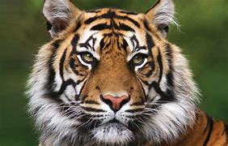
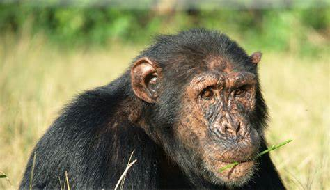
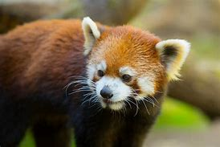

2000 Meadowvake RD, Toronto, ON M1B 5K7
| Name | Piture | Description | Popularity |
|---|---|---|---|
| Tiger |  | Tigers are distinctive orange-and-black-striped cats that are easily recognizable and highly endangered, having been eradicated from 93% of their historic range. The nine subspecies of this animals are restricted to small pockets of Asia, and their population is estimated to be between 3,000 and 4,000 cats in the wild. | |
| Bear |
| Bear, (family Ursidae), any of eight species of large short-tailed carnivores found in the Americas, Europe, and Asia. The sun bear (Helarctos malayanus) is the smallest, often weighing less than 50 kg (110 pounds). The largest bear is either the Kodiak bear (Ursus arctos middendorffi, a subspecies of Alaskan brown bear. | |
| Cimpanzee |  | Chimpanzee, (Pan troglodytes), species of ape that, along with the bonobo, is most closely related to humans. Chimpanzees inhabit tropical forests and savannas of equatorial Africa from Senegal in the west to Lake Albert and northwestern Tanzania in the east. | |
| Red Panda |  | Red pandas (Ailurus fulgens) have been found in the Himalayas at an altitude of 2,200 to 4,800 meters in northern Myanmar, Nepal, the Sikkim region of India, and the western Sichuan and Yunnan regions of China. |